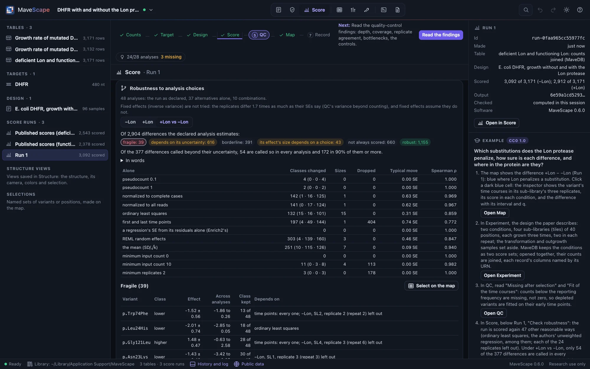
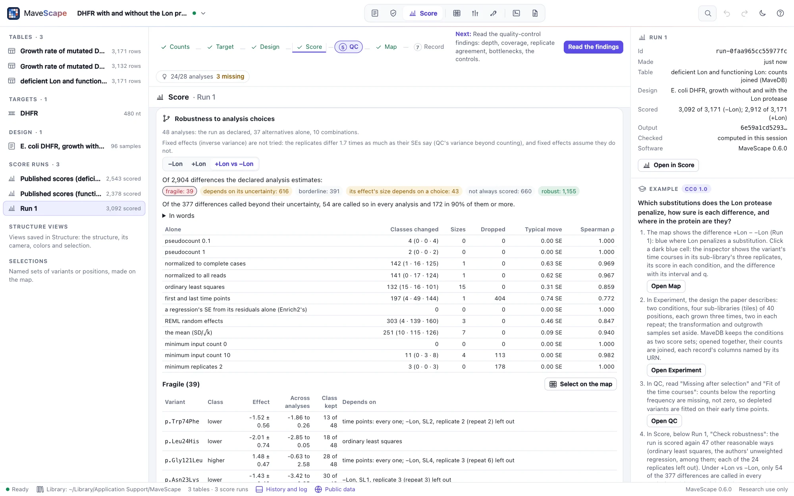

Robustness
A score is one analysis among several reasonable ones. Robustness repeats a run across the others and says, variant by variant, which conclusions hold under every one and which depend on a choice, naming it.
One run, many reasonable analyses


In Score, below a run, Check robustness scores the run again with other reasonable choices, in the score worker (a few seconds; DHFR's 48 analyses take about 3). It is a multiverse, or specification-curve, analysis (Steegen et al. 2016; Simonsohn et al. 2020): the run as it was made (the declared analysis), each alternative alone, then combinations of two or more, drawn with a fixed seed so that a run is checked the same way each time, 48 analyses in all. The declared analysis stays the result; the check says how much each conclusion depends on choices that could reasonably have been made otherwise.
What is varied, where the design allows it (the pane lists it before you check):
- Pseudocount: 0.1, 0.5 and 1 (not for DiMSum's fitness or sorted bins).
- Normalization: the wild type, the synonymous variants' median, complete cases, all reads.
- The model of uncertainty: the log ratio's counting error, or DiMSum's error model with each replicate scaled and shifted (two populations); weighted or ordinary least squares, or the first and last time points, and a regression's SE from its residuals alone or with counting's floor (a time series).
- The combination of replicates: moderated (MaveScape's), REML random effects, fixed effects, their mean with SE SD/√k. Fixed effects assume the replicates differ by their SEs alone; where they differ more (the replicates' dispersion above 1.5, which QC's variance beyond counting finds), fixed effects are not tried, and the pane says so.
- The filters: low-depth measurements removed (a minimum input count of 10, or none), a minimum of two replicates, every time point.
- Each replicate left out in turn, where its condition keeps another.
What changes, variant by variant
For each variant, and each difference between conditions, the check follows its effect (its score against the wild type's, so that normalizations compare), its rank, its SE, whether it is scored at all, and its class: lower than the wild type, like it, or higher, beyond its uncertainty (q < 0.05 by Benjamini and Hochberg; a difference between conditions, from its own q). Then its verdict:
- Robust: the same class in every analysis, and scored in every one.
- Fragile: an analysis moves its effect beyond its declared 95% interval and changes its class. The single choices that do so are named; a variant that only choices combined change names the smallest such combination. A move counts when it is also an outlier among the moves that analysis makes of every variant (five robust SDs from their median): leaving a replicate out moves every estimate a little, and among a thousand variants a few cross their interval by chance.
- Depends on its uncertainty: its class changes where its effect stays within its interval but its SE changes by more than half: another account of how uncertain it is (REML, the replicates' mean) calls it otherwise.
- Borderline: its class changes while its effect and SE barely move: it sits at the threshold.
- Its effect's size depends on a choice: its class holds, but one choice alone moves its effect beyond its interval (a zero count's score rests on the pseudocount).
- Not always scored: the same class wherever it is scored, but a filter or a replicate left out leaves it unscored.
The pane gives each verdict's count (click one to list its variants, each with its effect across the analyses, in how many it keeps its class and what it depends on), how many calls hold in every analysis and in 90% of them or more, and each alternative alone: the classes it changes (moved, by their uncertainty, at the threshold), the effects it moves while their class holds, the variants it drops, how far it moves the effects in general (the median shift, in declared SEs) and their rank correlation with the declared analysis. Click a variant to see it in the inspector, where a checked run's variant shows its class across the analyses and its verdict. For a condition, the least tolerant positions (the tenth with the least function, by the median effect of their substitutions) and how they rank in every analysis.
Read the uncertainty with the classes. With three replicates, how uncertain a variant is taken to be decides much: GRB2's Run 1 keeps the class of 504 of its 1,118 variants in every analysis, and 445 change only with another account of their SE (REML, or the replicates' mean). Its least tolerant positions hold: all six stay among the least tolerant fifth in every analysis. DHFR's 377 differences between −Lon and +Lon, which the Compare view found more variable than their SEs say, mostly depend on the account of their uncertainty and on the model of the time course: 54 hold in every analysis, 172 in 90% of them.
How it was validated
In ten simulated experiments of four replicates (no noise beyond counting, so that fixed effects are a reasonable choice, and declared by them), two kinds of fragile result were planted among variants of the wild type's effect: one replicate driving an effect (its output cut to a quarter), and an effect whose size appears at one pseudocount (no reads after selection). Every time, the variants reported fragile are exactly the replicate-driven ones, 92 of 93 naming that replicate left out; and the variants whose effect's size depends on the pseudocount are exactly the zero-count ones, each on pseudocount 0.1 alone. The clearly lost variants keep their class in every analysis. Under MaveScape's defaults, the moderated combination does not call the replicate-driven effect at all (its SE carries the replicates' disagreement), so no conclusion rests on it. The declared analysis is the run itself, to the last bit; the classes equal an independent computation; a second check gives the same files byte for byte.
The files and scripts
Variants (CSV) writes each variant of each condition and difference: its class, effect, SE and q in the declared analysis, how many analyses score it and keep its class, its verdict and what it depends on, and its effect's and rank's range. Positions (CSV) writes each position's median effect and rank, their range, and in how many analyses it is among the least tolerant. Record (JSON) writes the run's output hash, every choice and specification (and why any could not be scored), each target's counts, calls and each alternative's effect, and the methods' sentence (FORMATS.md). A check is a view of the run, not kept in the workspace: the same seed makes it again.
Remote control's check_robustness checks a run (run; max, the analyses in all) and returns the record; export with what: "robustness" writes the variants, or, to a path ending in .json, the record; robustness-positions the positions (Remote control).